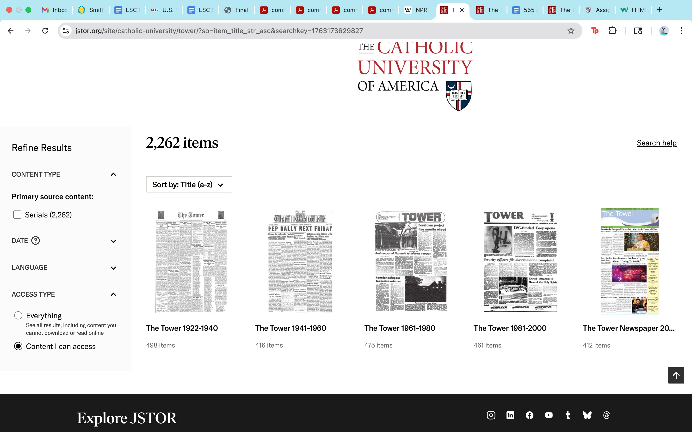

| Input | Output |
|---|---|
| Searched for "Election" | 146 results, 6 pages, 1946-2018 |
| Clicked on "The Tower, Vol 90, Issue 11, (November 9, 2012) pages 1-8" | PDF document of The Tower, Vol 90, Issue 11 pages 1-8 |
| Filtered for results from 2008 to 2020 | 86 results, 4 pages |
| Searched for "presidential debate" | 67 results, 1976-2016 |
I believe that the Tower archive could be easier to navigate if it was its own website instead of being housed in JSTOR. There was a search help link to click, but this feature is a part of JSTOR and is not specific to the archive. All of the features are JSTOR features. The archive is organized into five sections, each of which contains between 412 to 498 items. This makes it easier to narrow down a search by time frame. In my opinion, the design of JSTOR is minimalistic which ensures that there is little to no attention drawn away from the information. This fulfills the eighth heuristic. In order to help the user in their search, there is a feature that gives the user the ability to refine and sort results. When no results are produced, the site provides suggestions on how to proceed. I believe that if this archive were its own site independent from JSTOR it might be able to serve the needs of its specific users better than it can while housed on a larger platform.
One strength of the system is that the contents of the collection are well organized in five groups. Another strength is the ability to filter and sort the search in different ways. Weaknesses of the system include the reliance on JSTOR as a host and reliance on JSTOR functions, as well as some keywords not being picked up by the search function.

Similar to the heuristic analysis, the user also stated that the sub groupings of material from the archive was helpful to navigating the system. It also appeared that the user was not distracted by any excessive features of the website, reinforcing my opinion that the website has a minimalistic design. The user did not utilize the sort and refine features that were provided. The user did, however, use the search function and had difficulties in using that feature. The suggestions that appeared when no search results were found did not appear to be helpful to the user.